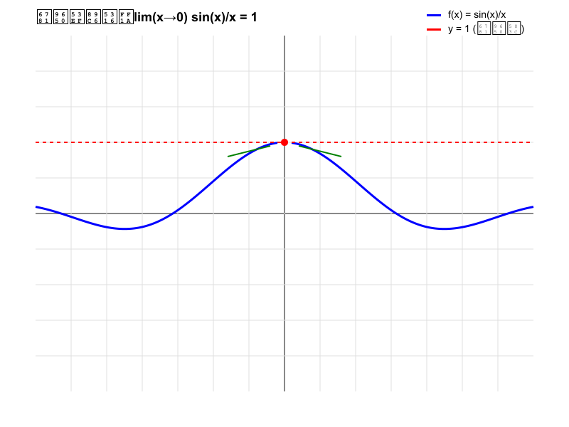

极限可视化：lim(x→0) sin(x)/x = 1

数学原理
函数：
f(x) = sin(x)/x
极限：
lim(x→0) sin(x)/x = 1
极限的概念
当x趋近于0时，函数值趋近于1
函数在x=0处无定义，但极限存在
左右极限相等，因此极限存在
观察要点
蓝色曲线表示函数f(x) = sin(x)/x
红色虚线表示极限值y = 1
绿色箭头表示x从两侧趋近于0
红点标记了极限点(0,1)
重要极限
这是微积分中的重要极限之一，在推导导数公式时有重要应用。